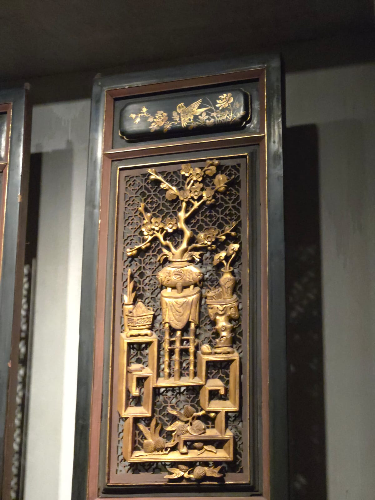
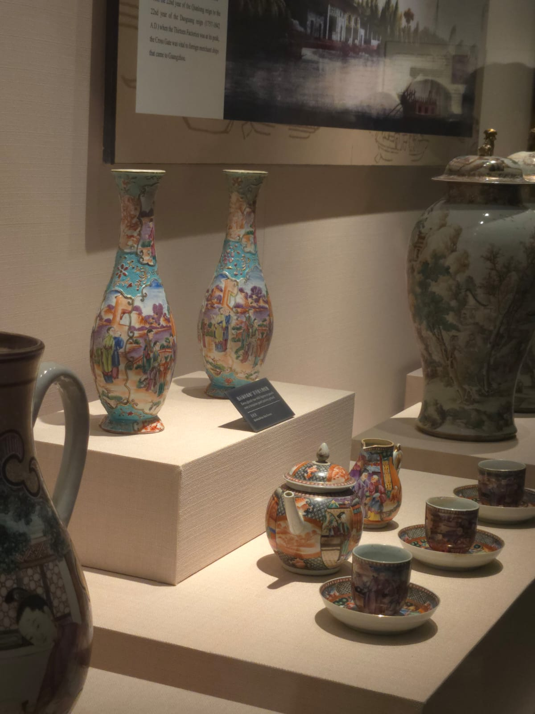
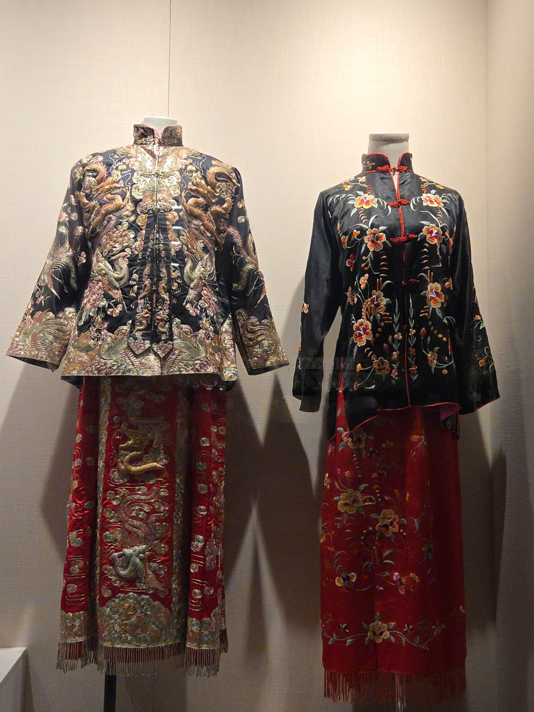
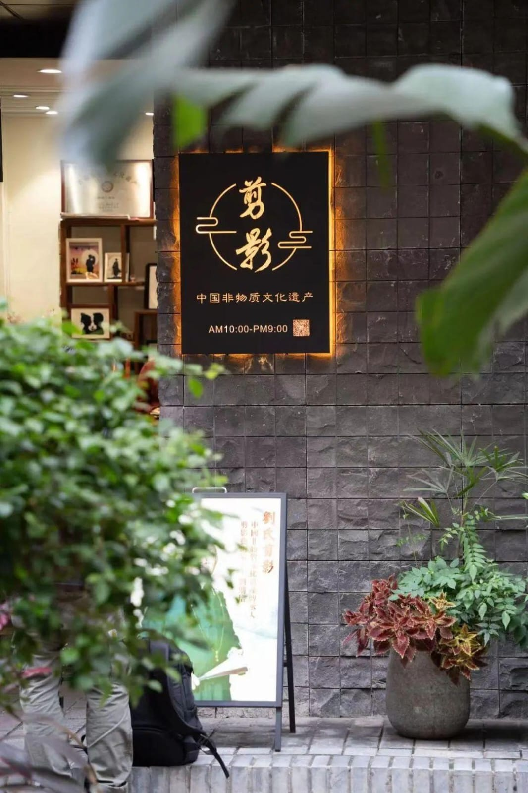
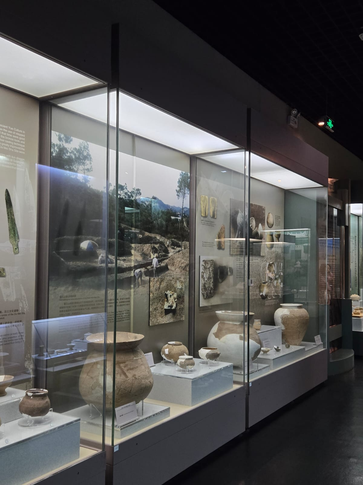

此照片展示了南山博物館館藏的浮雕藝術。這是 一塊經由手工精雕細琢的木板,歷史悠久,以花 卉和古時器皿等為主題。政府在其中擔當監管者 的角色。根據資料顯示,博物館展出的每一件瓷 器、浮雕或手工藝品,均須符合專家鑑定以確保 其準確性,藉此正確教育公眾並不變質地呈現歷 史。由此可見,政府的監管職能為非遺保護築起 了一道品質防線,讓傳統文化能在正確的軌道上 代代相傳。
出處:《博物館條例》(國務院令第 659號)》

此照片為南山博物館展出的瓷器。瓷器的製作需 經多層工序,包括拉坯、乾燥、燒製、打磨、上 釉及繪製,甚至需要二次燒製等複雜程序,且皆 為人手製作。政府在此過程中擔當主導者的角 色。根據資料,展出的瓷器屬於國家或省級已列 入國務院或地方政府制定的《非物質文化遺產代 表性項目名錄》,受國家法律保護。政府透過 《非物質文化遺產法》確立了這些項目的法律地 位,將保護工作納入行政框架內,而非僅僅是民 間自發行為。由此可見,政府的政策引導是推動 非遺保護的首要推動力。
出處:中國非物質文化遺產網-國家級非遺代表性項目名錄

此照片為南山博物館館藏的裙褂。裙褂本身屬於 物質文化遺產,而其核心價值——「裙褂上的刺 繡技藝」則屬於非物質文化遺產。每件裙褂的圖 案元素皆極為複雜,且需由人手耗時完成。政府 擔當資助者的角色。根據資料顯示,深圳南山博 物館所展出的裙褂、剪紙藝術等需要大量手工時 間,商業利潤較低,因此政府撥款到「非物質文 化遺產保護專項資金」計劃,用以補貼傳承人, 讓他們有足夠資金繼續創作或教學。由此可見, 政府的財政支持是傳統技藝得以延續、避免因現 實經濟壓力而斷代的關鍵後盾。
出處:《深圳市省級非物質文化遺產保 護專項資金管理辦法》

此照片展示了南頭古城內的一間商店,主要售賣 剪紙藝術,現場更為顧客剪出其人像剪影,是極 具趣味的文創產品。剪紙亦是一項重要的非物質 文化遺產,現今已不多傳承人從事。政府擔當促 進者的角色。根據資料可知,深圳南山博物館與 南頭古城實施免費開放,這原於深圳市政府推行 的「博物館免預約、免費開放」政策。這種做法 打破了文化消費的門檻,讓像瓷器、浮雕這類珍 貴的文化遺產不再侷限於學術研究,而是能走進 大眾生活。政府透過提供場地與資源,將展場轉 化為一個公共教育平台,讓不同階層的市民都能 親身接觸非遺文化。由此可見,政府的推廣政策 有效地促進了文化的普及與社會共鳴。
出處: 《深圳市公共文化服務保障條例》 (此照片出處: http://inanshan.sznews.com/content/2022-05/25/content_25148121.htm)

.此次前往深圳博物館與南頭古城的實地考察,讓 我深刻體會到非遺保護的重要性。現時中國透過 開設展覽,讓市民能認識及保護不同的技藝,包 括上述的木雕、瓷器技藝、裙褂刺繡和剪紙等。 除了展覽,政府亦推行多項配套政策,包括「十 四五」規劃、文創IP 開發及紀錄片拍攝等。雖 然現代科技發達,年輕人較少接觸這些傳統技 藝,導致傳承人不多,但透過介紹與展覽將這些 文化推向大眾,並將相關課程納入學校教育,定 能讓這些珍貴的文化遺產得以延續。